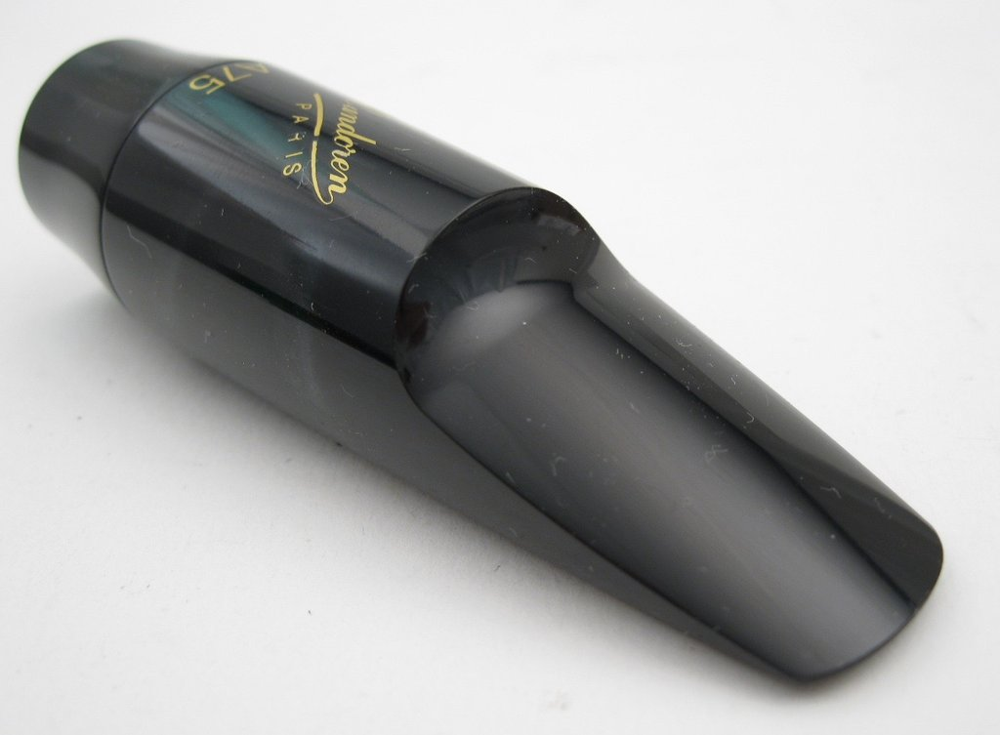

Vandoren A-75 мундштук
Описание товара
Мундштук для альт-саксофона Vandoren A-75, серия Jumbo Java, SM-604B
Характеристики товара
- Открытость, 1/100мм: 260
- Длина выемки: Д
- Рекомендуемая толщина тростей
- Traditional: 11/2 -> 2
- V12: 21/2
- JAVA Red Cut: 11/2 -> 2
Подробное описание товара
Эбонитовый мундштук JAVA подходит для джаза, музыки соул и фанка. По звуковому решению сходен с металлическим мундштуком, однако дает ощущение комфорта, присущее эбониту.
